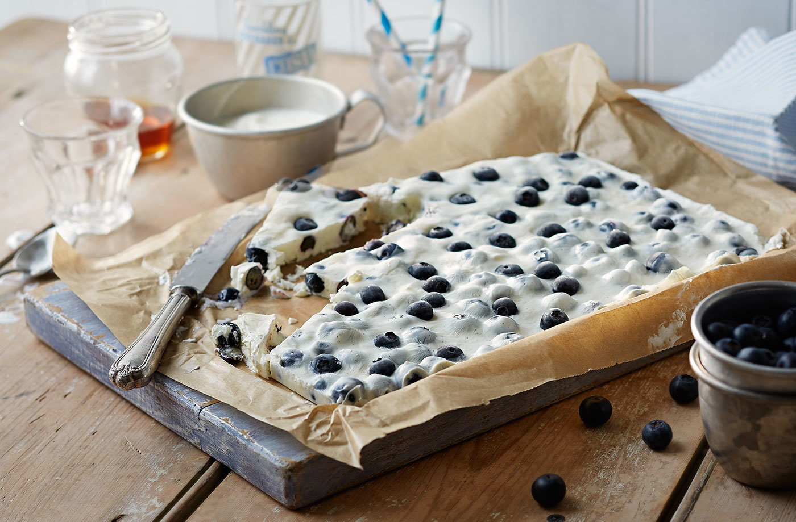

Уранови ледени блокчета

Начин на проготвяне
- Сложете всички продукти в блендера, като замразените плодове са най-отгоре.
- Блендирайте до получаване на гладка консистенция. Замразете във фризера. Готово - толкова простичко, а толкова вкусно.
- По ваше желание може да изпечете сусамови семена и да поръсите отгоре.
Замразени блокчета с боровинки и кисело мляко, които пресъздават ледения характер на Уран.
Уран

Факти
- Уран е най-студената планета в Слънчевата система със средни температури от -180 градуса и минимални от -225 градуса.
- Тя е и една от най-ветровитите. На определени места ветровете на Уран достигат скорост от 900 км/ч. За сравнение най-силните, ураганни ветрове на Земята са със скорост най-много 480 км/ч.
- Планетата е 63 пъти по-голяма и 15 пъти по-тежка от Земята. Повърхността на Уран също е огромна – 16 пъти по-голяма от тази на Земята, а радиусът – 4 пъти по-голям.
- Една година на Уран се равнява на 84 земни години или приблизително 30 687 дни на земята. Но денонощието на Уран не е същото като на Земята – то е приблизително 6 часа и 46 минути по-кратко то това на Земята.
- Уран е единствената планета, кръстена на гръцки бог, а не на римски. Когато през 1781 година планетата е открита от астронома Уилям Хершел, той я нарича Георгиус Сидус (Георгиевата звезда) в чест на своя покровител крал Джордж III, тогавашния монарх на Великобритания. Името обаче не е възприето и в крайна сметка планетата е кръстена на древногръцкия бог на небето.
- Уран има 27 луни и всички те са кръстени на герои на британските поети Уилям Шекспир и Александър Поуп. Най-голямата луна се казва Титания – на царицата на феите от шекспировата комедия „Сън в лятна нощ“. Титания е осмата най-голяма луна в нашата слънчева система.
- Структурата на планетата е съставена от три слоя: скалистото ядро, мантията от вода, амоняк и метан, и атмосферата, която се състои главно от водород и хелий.
- Разстоянието между планетите в Слънчевата система винаги е различно, тъй като те са в постоянно движение, но когато Уран е най-близо до Земята, разстоянието между тях е 2,6 милиарда километра. Това означава, че пътуването на космически кораб от Земята до Уран ще отнеме около 10 години.
- Като се има предвид огромното разстояние между нашата планета и Уран, не е голяма изненада, че в историята на човечеството само веднъж космически кораб е приближавал планетата. През 1986 г. космическата сонда „Вояджър 2“ е прелетя на около 81 500 километра разстояние от нея..